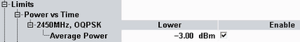

Power Limits
The limits are defined as follows.

LR-WPAN power limits
The conformance requirements are described in "Transmit Power Requirements"; for the detailed description of power results refer to "Statistical Power vs Time Results".
Lower limit of the average burst power during the carrier-on state for the minimum power results, see "Common View Elements".
Remote command: